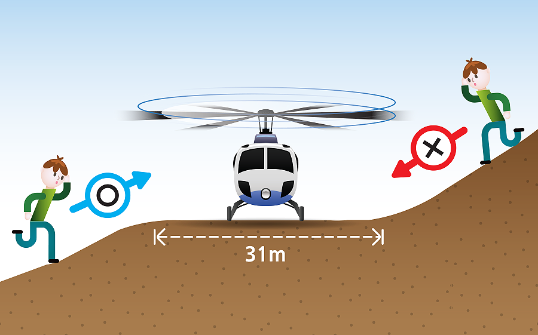

헬리콥터는 최소 31m X 31m 장애물이 없는 평평한 곳에 착륙할 수 있습니다. 이동할 수 있다면 이와 같은 곳을 찾아 H 표시를 해 두고 대기합니다.

낮은 곳으로부터 접근해야 합니다.
평지나 더 낮은 곳으로부터 헬리콥터 쪽으로 갑니다. 헬리콥터보다 높은 곳에서 다가가면 날개에 다칠 수 있어 매우 위험합니다. 경사진 곳에서 내려오면서 헬리콥터에 접근하면 안됩니다.
뒤쪽에서 다가가지 마세요.
헬리콥터의 뒤쪽은 조종사와 구조대원이 볼 수 없는 블라인드 스팟이며 꼬리 회전 날개에 다칠 수 있습니다. 헬리콥터의 앞쪽이나 옆쪽으로 돌아서 접근해야 합니다.